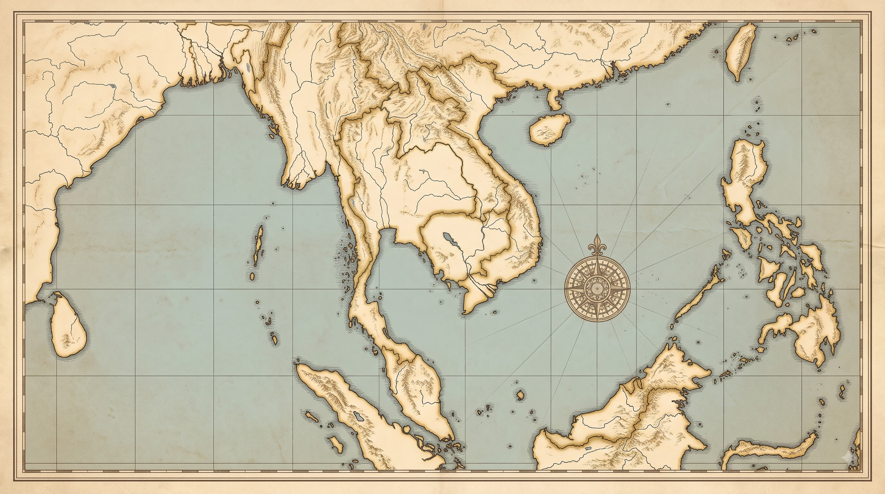
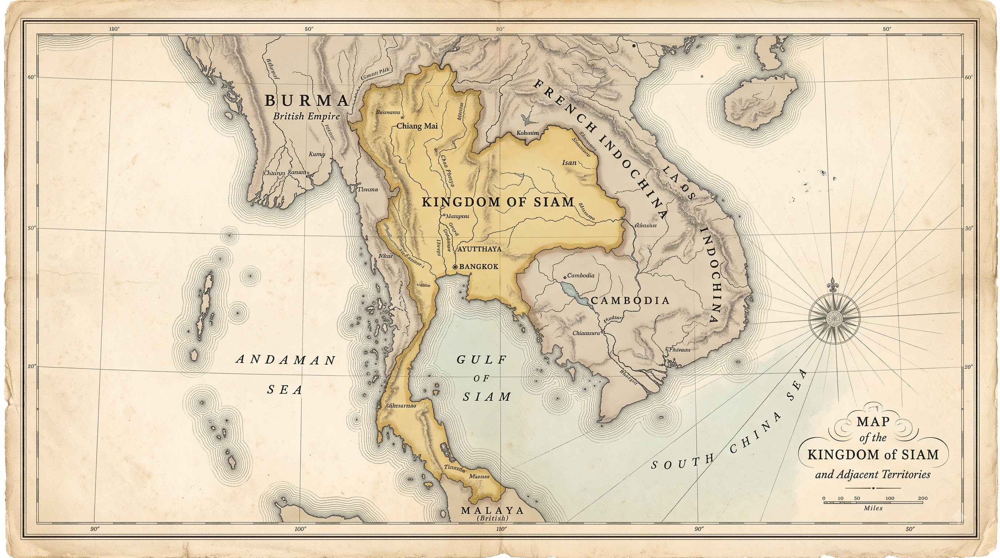

Nguồn tài nguyên
Hương liệu, hồ tiêu, thiếc, gạo, cao su – những mặt hàng có giá trị lớn trong thương mại thế giới.

LỊCH SỬ 11 · KẾT NỐI TRI THỨC VỚI CUỘC SỐNG
Quá trình xâm lược và cai trị của chủ nghĩa thực dân ở Đông Nam Á; cải cách ở Xiêm.
01 / BỐI CẢNH
Nằm giữa hai đại dương, giàu tài nguyên và án ngữ những tuyến hàng hải quan trọng, Đông Nam Á trở thành đích ngắm của tư bản phương Tây.
Hương liệu, hồ tiêu, thiếc, gạo, cao su – những mặt hàng có giá trị lớn trong thương mại thế giới.
Các tuyến biển nối Ấn Độ Dương với Thái Bình Dương đi qua khu vực.
Công nghiệp châu Âu cần nguyên liệu, thị trường; nhiều vương triều trong vùng suy yếu.
02 / LÀN SÓNG XÂM LƯỢC
Bồ Đào Nha chiếm Malacca.
Tây Ban Nha bắt đầu chiếm Philippines.
Công ty Đông Ấn Hà Lan ra đời, mở rộng ở Indonesia.
Anh mở rộng kiểm soát Pênang, Singapore và Malacca.
Ba cuộc chiến Anh–Miến; Miến Điện mất độc lập.
Pháp xâm lược Việt Nam, Campuchia và Lào.
Mỹ thay Tây Ban Nha ở Philippines.
03 / BẢN ĐỒ THUỘC ĐỊA
04 / BỘ MÁY THUỘC ĐỊA
Khai thác tài nguyên, lập đồn điền và hầm mỏ, xây dựng giao thông phục vụ vận chuyển, áp đặt thuế nặng.
Cai trị trực tiếp hoặc thông qua chế độ bảo hộ; duy trì vua quan bản xứ như công cụ cai trị.
Hạn chế giáo dục, truyền bá văn hóa phương Tây; xuất hiện các tầng lớp công nhân, tư sản và trí thức mới.
Mâu thuẫn dân tộc ngày càng sâu sắc, tạo nền tảng cho các phong trào đấu tranh.

05 / TRƯỜNG HỢP XIÊM
Anh kiểm soát Miến Điện, Pháp mở rộng ở Đông Dương. Xiêm đứng giữa hai vùng ảnh hưởng và tìm cách bảo vệ nền độc lập bằng cải cách trong nước cùng ngoại giao cân bằng.
06 / NHÂN VẬT LỊCH SỬ
01Vua Xiêm · Trị vì 1868—1910
Nhà vua gắn liền với công cuộc cải cách và hiện đại hóa Xiêm trong bối cảnh sức ép ngày càng lớn từ các đế quốc phương Tây.
07 / CÁI GIÁ CỦA ĐỘC LẬP
Nhường vùng đất thuộc Lào cho Pháp.
Nhường thêm một số vùng đất ở Lào và Campuchia cho Pháp.
Nhường quyền kiểm soát cho Anh.
Chịu những ràng buộc và lệ thuộc nhất định vào Anh, Pháp.
08 / LÝ GIẢI LỊCH SỬ
Hiện đại hóa bộ máy, quân đội và kinh tế nhằm tăng năng lực tự vệ.
Nhượng bộ có chọn lọc, tận dụng mâu thuẫn và cạnh tranh giữa Anh – Pháp.
Thỏa thuận Anh – Pháp năm 1896 góp phần duy trì vị thế vùng đệm của Xiêm.
09 / KIỂM TRA KIẾN THỨC
Khai thác kinh tế (đồn điền, hầm mỏ, thuế); chia để trị về chính trị; hạn chế giáo dục và áp đặt văn hóa trong lĩnh vực văn hóa – xã hội.
Nhờ cải cách của vua Chulalongkorn, chính sách ngoại giao mềm dẻo và vị thế vùng đệm giữa hai thuộc địa của Anh và Pháp; đổi lại, Xiêm phải nhượng một phần lãnh thổ.
10 / DI SẢN LỊCH SỬ
LỊCH SỬ KHÔNG CHỈ LÀ NHỮNG ĐƯỜNG BIÊN.
Thực dân hóa mở đầu cho một thời kỳ đấu tranh lâu dài để giành lại quyền tự quyết.
THE PEOPLE BEHIND THE STORY
NHỮNG GƯƠNG MẶT ĐỨNG SAU HỒ SƠ LỊCH SỬ NÀY
Vai trò / đóng góp
ARCHIVE Nº 001Vai trò / đóng góp
ARCHIVE Nº 002Vai trò / đóng góp
ARCHIVE Nº 003 ẢNH THÀNH VIÊN 04
ẢNH THÀNH VIÊN 04Vai trò / đóng góp
ARCHIVE Nº 004CẢM ƠN THẦY CÔ VÀ CÁC BẠN ĐÃ THEO DÕI.